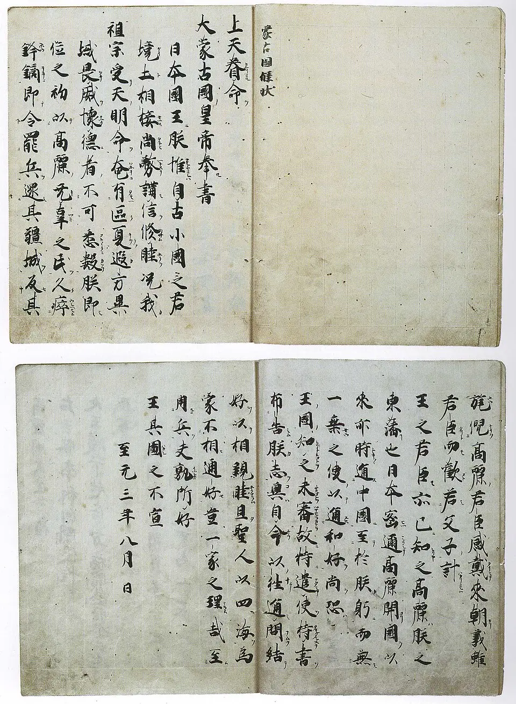
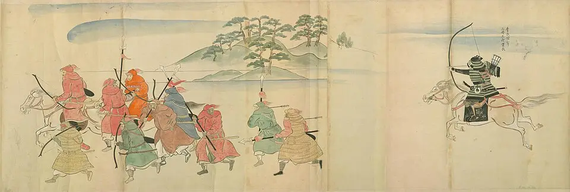
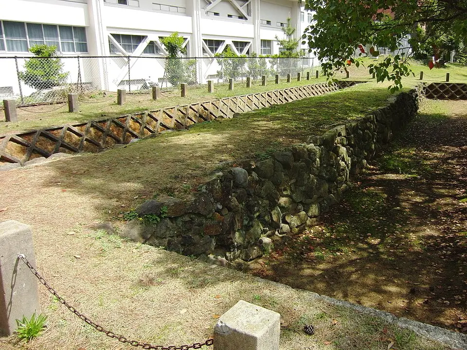
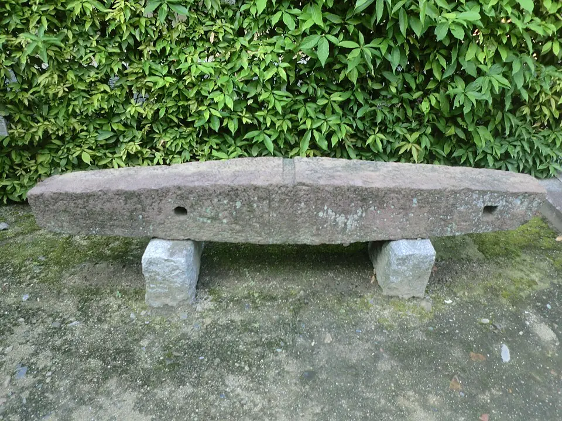

Hạm đội Mông Cổ, lựu đạn đầu tiên và "thần phong"
Năm 1274 và 1281, nhà Nguyên của Hốt Tất Liệt hai lần vượt biển đánh Nhật Bản. Cả hai lần hạm đội đều gặp bão, và người Nhật gọi cơn bão ấy là kamikaze, gió thần.

Chiều ngày 20/11/1274, sau một ngày giao chiến ở vịnh Hakata, đảo Kyushu, quân Nguyên đã đẩy các samurai lùi sâu vào đất liền và đốt cháy thị trấn Hakata. Quân Nhật chuẩn bị tử thủ ở thành đất Mizuki. Nhưng đến sáng, phần lớn chiến thuyền Nguyên đã biến mất khỏi vịnh. Chuyện gì xảy ra trong đêm ấy đến nay vẫn chưa ai chắc chắn.
Sáu lá thư không được trả lời
Sau khi buộc vương quốc Cao Ly thần phục, Hốt Tất Liệt muốn Nhật Bản cũng làm vậy. Từ năm 1266 đến 1273, các phái đoàn Mông Cổ và Cao Ly sáu lần sang Nhật đòi thần phục. Lá thư năm 1268 tự xưng là của "Hoàng đế Đại Mông Cổ, chịu mệnh Trời", lời lẽ mềm mỏng nhưng kết thúc bằng câu hỏi ai muốn dùng đến binh đao. Triều đình Kyoto muốn trả lời, nhưng Mạc phủ Kamakura, khi ấy do họ Hōjō nắm quyền, đã gạt đi. Phái đoàn cuối cùng, do Triệu Lương Bật dẫn đầu, bị samurai có vũ trang chặn lại năm 1271 và chờ vô ích đến năm 1273.
Lần thứ nhất: năm 1274


Cao Ly phải đóng thuyền và chịu chi phí: 300 thuyền lớn, 300 thuyền nhanh và 300 thuyền nhỏ. Lực lượng gồm khoảng 15.000 lính Mông Cổ, Hán và Nữ Chân, 6.000 đến 8.000 lính Cao Ly và 7.000 thủy thủ Cao Ly. Ngày 2/11/1274, hạm đội rời Hoppo, nay là Masan ở Hàn Quốc. Hai ngày sau họ đổ bộ lên đảo Tsushima, nơi quan trấn thủ Sō Sukekuni chỉ có 80 kỵ binh samurai cùng tùy tùng. Ông tử trận trước khi trời tối.
Ngày 19/11, quân Nguyên đổ bộ vào vịnh Hakata. Sử gia Thomas Conlan ước tính mỗi bên chỉ có khoảng 3.000 người trong trận này, các sử gia Nhật thì ước tính phía Nhật có khoảng 6.000. Quân Nguyên tiến thành khối dày sau tấm khiên, điều quân bằng trống, và thỉnh thoảng ném bom vỏ giấy hoặc vỏ sắt làm ngựa Nhật hoảng loạn. Một ghi chép phía Nhật kể rằng theo lệ samurai phải xưng danh rồi đánh tay đôi, nhưng đối phương không để ý đến lệ đó mà xông vào cùng lúc. Khi một samurai bắn mũi tên báo hiệu mở trận, quân Nguyên phá lên cười.
Tối hôm đó, tướng Lưu Phục Hanh bị samurai Shōni Kagesuke bắn trúng mặt. Các tướng Nguyên họp trên thuyền. Hân Đô (Indü) muốn đánh tiếp trong đêm, Hồng Trà Khâu sợ quân đã kiệt sức và sợ bị phục kích, Lưu Phục Hanh đồng ý rút quân về thuyền. Nguyên sử chép rằng sau đó "một trận bão lớn nổi lên" làm nhiều chiến thuyền vỡ trên đá. Không rõ bão đánh ngay trong vịnh hay trên đường về Cao Ly. Có nguồn nói 200 thuyền bị mất, và trong khoảng 30.000 người ra đi có 13.500 người không trở về.
Bức tường đá và lần thứ hai: năm 1281


Mạc phủ đoán rằng quân Nguyên sẽ quay lại. Năm 1276, họ cho xây một bức tường đá cao khoảng 2 m dọc vịnh Hakata, gọi là Genkō Bōrui, dài khoảng 20 km. Năm 1275 và 1279, Hōjō Tokimune cho chém hai phái đoàn sứ giả nhà Nguyên, mỗi phái đoàn năm người. Mộ năm sứ giả năm 1275 vẫn còn ở chùa Jōryū-ji, thành phố Fujisawa.
Đến năm 1279, nhà Nguyên đã diệt Nam Tống và có thêm hạm đội phương nam. Hơn 1.500 chiến thuyền được trưng dụng, 600 chiếc từ nam Trung Quốc và 900 chiếc từ Cao Ly. Bức tường khiến quân Nguyên không tìm được bãi đổ bộ thuận lợi, và hạm đội phải lênh đênh trên biển một thời gian dài, hao dần lương thực. Ngày 15/8/1281, một trận bão lớn đánh vào hạm đội đang thả neo. Theo lời một người Trung Quốc sống sót, sau bão tướng Phạm Văn Hổ chọn những chiếc thuyền tốt nhất bỏ đi, để lại khoảng 100.000 quân trên đảo Taka. Quân Nhật tấn công và bắt hàng vạn người. Một nguồn Cao Ly chép rằng trong 26.989 người Cao Ly ra đi, 7.592 người không trở về.
Bộ tranh cuộn Nhật Bản về cuộc xâm lược có vẽ một quả bom nổ giữa trận, nhưng Conlan chỉ ra rằng hình quả bom được vẽ thêm vào thế kỷ 18.
Bằng chứng nói gì


Các con số đều bị nghi ngờ. Nguyên sử ghi quân Nhật có 102.000 người, phía Nhật thì nói mình bị áp đảo mười chọi một. Với lần thứ hai, con số truyền thống là khoảng 4.400 thuyền và 140.000 người. Conlan cho rằng con số này bị phóng đại khoảng mười lần. Nhà sử học Morris Rossabi đồng ý là đã phóng đại, nhưng đưa ra con số khoảng 70.000 người.
Bom cũng là chuyện đáng xem lại. Bộ tranh cuộn Nhật Bản về cuộc xâm lược có vẽ một quả bom nổ giữa trận, nhưng Conlan chỉ ra rằng hình quả bom được vẽ thêm vào thế kỷ 18. Tuy vậy, Hội Khảo cổ học Dưới nước Kyushu Okinawa sau đó đã tìm thấy nhiều vỏ bom trong một xác tàu dưới biển. Ảnh chụp X-quang cho thấy chúng chứa thuốc súng và được nhồi mảnh sắt vụn. Bức tranh có thể là thêm thắt, nhưng thứ vũ khí là có thật.
Chi tiết bên lề: thanh kiếm thay đổi
Cuộc chiến để lại dấu vết trên kiếm Nhật. Các thợ rèn trường phái Sōshū, tiêu biểu là Masamune, nghiên cứu những thanh tachi bị gãy hoặc cong trong trận để cải tiến thiết kế.
Dư âm đến hôm nay
Hai cơn bão là những sự kiện đầu tiên được gọi là kamikaze, "thần phong". Cách đọc phổ biến hơn trong lịch sử thật ra là shinpū. Thế kỷ 20, chính quyền quân phiệt Nhật dùng lại từ này cho các phi công lao máy bay vào tàu địch trong những năm cuối Thế chiến II, với ý rằng họ là ngọn gió thần quét kẻ thù khỏi biển. Nghĩa ấy nay là nghĩa phổ biến nhất của từ kamikaze trong tiếng Anh.
Hai cuộc xâm lược và cơn bão năm 1281 được nhiều nguồn hai phía ghi lại; quy mô hạm đội và vai trò của cơn bão năm 1274 thì vẫn còn tranh luận.